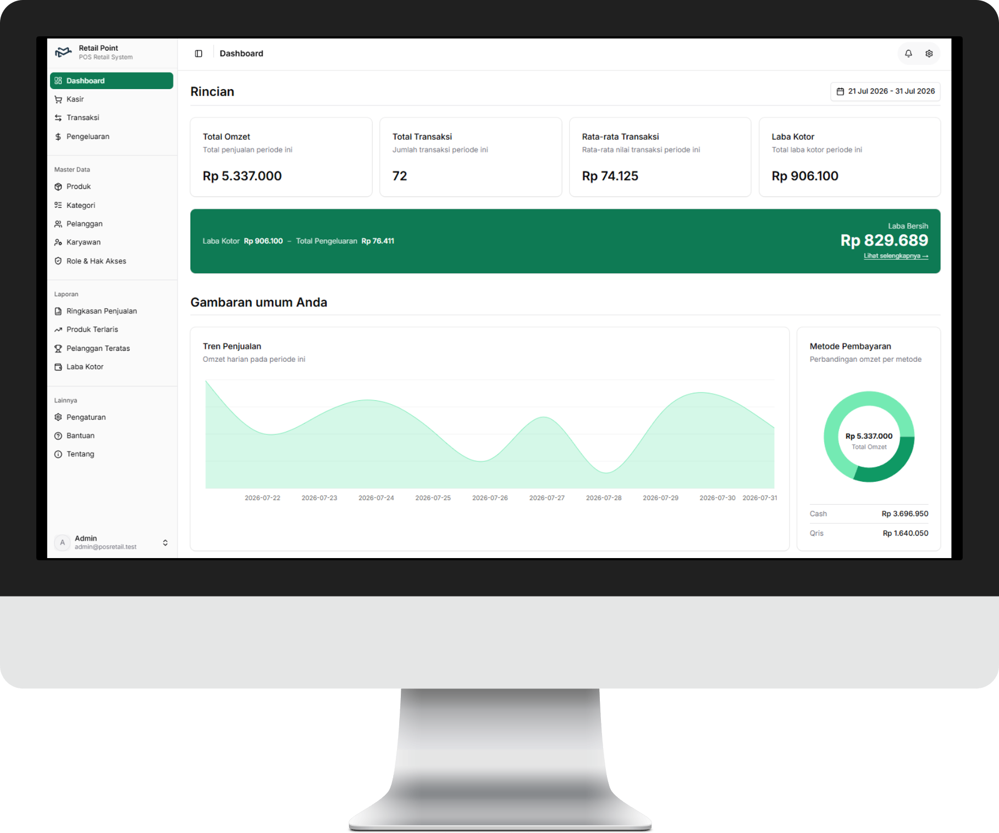
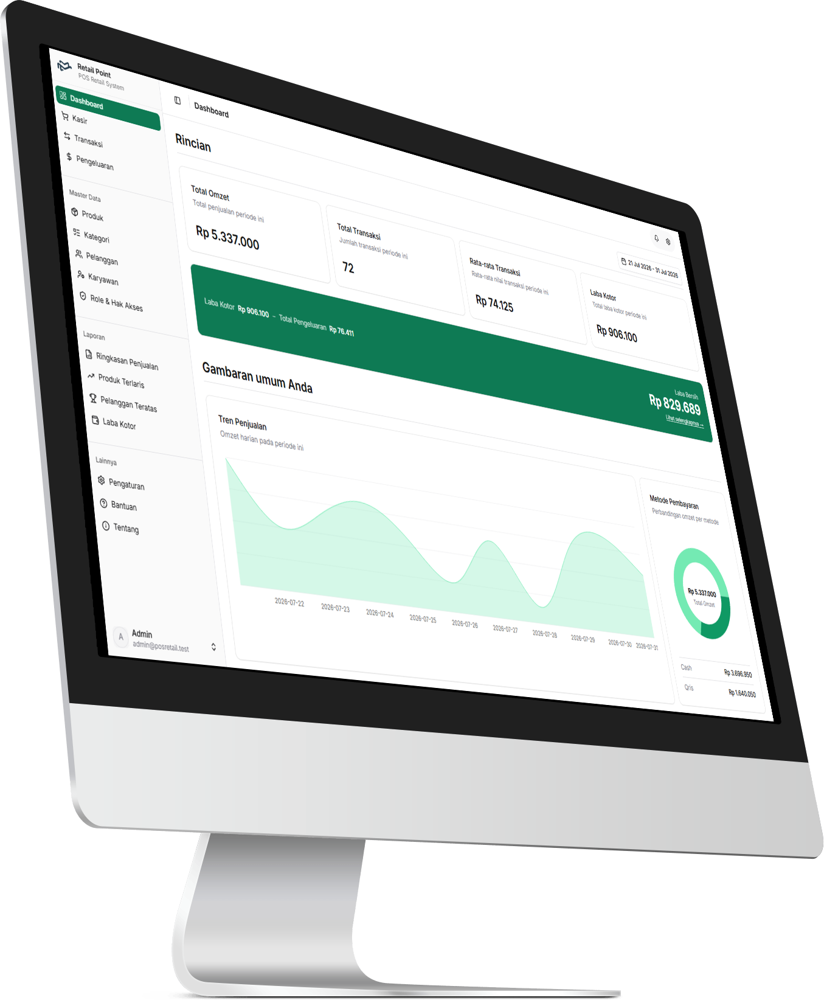

Kasir & shift
Buka/tutup kasir per shift dengan hitung selisih kas otomatis; Owner bisa force-close. Setiap void tercatat di audit trail.
Multi-tenant POS · SaaS
Aplikasi kasir (POS) berbasis SaaS untuk UMKM retail — shift kasir, stok, pajak, dan laporan laba dalam satu aplikasi, dengan data tiap toko terisolasi di dua lapis.

01 — Dashboard

02 — Fitur utama
Setiap toko mendaftar sendiri, lalu mengatur role karyawan, satuan, metode bayar, dan jenis pajaknya — tanpa pernah melihat data toko lain.
Buka/tutup kasir per shift dengan hitung selisih kas otomatis; Owner bisa force-close. Setiap void tercatat di audit trail.
PPN per produk, dihitung otomatis saat checkout dan tersimpan di riwayat. Struk thermal 58 mm dan invoice A4.
Peringatan stok menipis dan habis lewat WebSocket, bukan polling — hilang otomatis saat restock.
Penjualan, produk terlaris, pelanggan teratas, laba kotor dan bersih, plus pengeluaran per sumber dana kas dan non-kas.
Role bawaan Owner dan Kasir plus role custom tanpa batas, dengan permission per fitur.
Buat toko demo atau berbayar, kelola status trial / aktif / suspend, dan pantau pertumbuhan semua tenant.
03 — Di balik layar
Isolasi tenant dua lapis · dua sistem autentikasi terpisah
Aplikasi toko dan admin panel sebagai SPA
Guard Sanctum tenant + admin, token 8 jam, OTP email
Row-Level Security di database, plus scope tenant di aplikasi
WebSocket self-hosted untuk notifikasi stok
Backend
Frontend